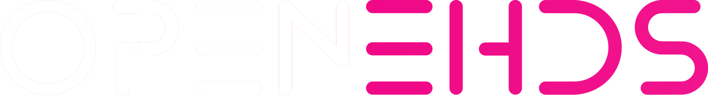

01
Interoperacyjność
od początku
Budujemy rozwiązania, które rozmawiają z istniejącymi systemami i wspierają europejskie standardy.

Budujemy otwartą infrastrukturę, która pomaga organizacjom bezpiecznie wymieniać dane i przygotować się na EHDS — bez uzależnienia od jednego dostawcy.
EHDS zmienia sposób, w jaki dane medyczne przepływają między krajami, instytucjami i systemami. My przekładamy regulacje na praktyczne, otwarte komponenty — gotowe do audytu, adaptacji i ponownego użycia.
Budujemy rozwiązania, które rozmawiają z istniejącymi systemami i wspierają europejskie standardy.
Bezpieczeństwo, transparentność i kontrola nad danymi są częścią architektury — nie dodatkiem.
Publiczny kod, audytowalne decyzje i komponenty możliwe do wdrożenia w realnym środowisku.
Zobacz, jak projektujemy pełny proces EHDS Secondary Use — z kontrolą dostępu, Secure Processing Environment i audytowalnym eksportem rezultatów.
Łączymy wiedzę technologii, ochrony zdrowia, administracji i nauki. Tak powstają rozwiązania użyteczne dla wszystkich uczestników EHDS.
Zbudujmy to wspólnie
Dołącz do społeczności, która zamienia europejską wizję w działającą infrastrukturę.